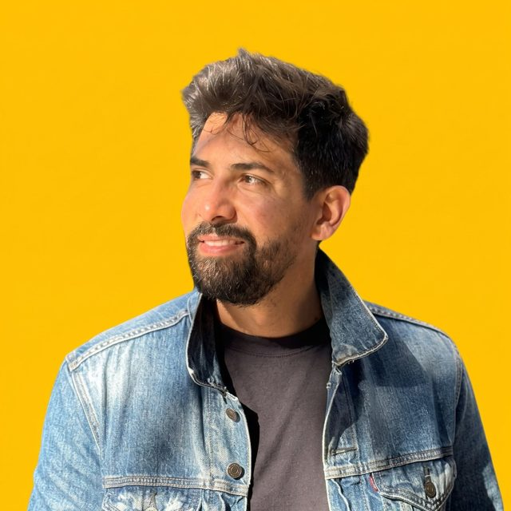

General arrangement
Sheet 01 · IsometricSenior site reliability engineer
Ricardo Herrera

I build infrastructure that stays up and stays boring: Kubernetes platforms, observability, and the automation that lets other engineers ship on their own. This drawing set takes the whole operation apart, one sheet at a time.
Drawing register
| No. | Sheet | Contents |
|---|---|---|
| 01 | General arrangement | Index |
| 02 | Three-view | About |
| 03 | Exploded assembly | Work |
| 04 | Display, detail A | Writing |
| 05 | Tape drive, detail B | Archive |
| 06 | Keyboard, plan | Contact |
ProjectYN-1 workstation
TitleGeneral arrangement
DrawnR. Herrera
ScaleNTS
Sheet01 / 06
RevB
Released · Rev B